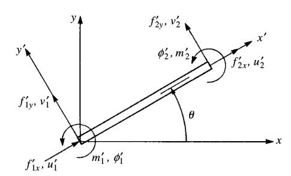
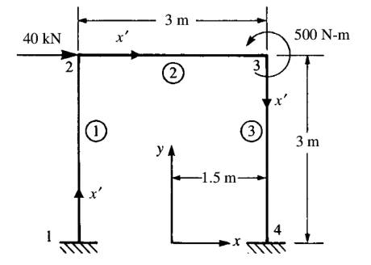

Bu derste kirişler ve makaskirişleri üstdüşüm ile birleştirip hem eksenel hem eksene dik kuvvetler ile nasıl hesap yapabileceğimizi göreceğiz. Daha sonra bu yeni parça türü bir şasi içinde biraraya koyulup daha çetrefil yapılar analiz edilecek. Ama önce döndürme kavramını görelim.
Dönüş (Rotation)
Alttaki gibi bir kiriş düşünelim,
Daha önce bu tür bir kiriş üzerinde eksenel yöndeki kuvvetler ve yer değişimlerinin ilişkisini
\[ \left[\begin{array}{c} f'_{1x} \\ f'_{2x} \end{array}\right] = \frac{AE}{L} \left[\begin{array}{cc} 1 & -1 \\ -1 & 1 \end{array}\right] \left[\begin{array}{c} u'_1 \\ u'_2 \end{array}\right] \qquad (1) \]
olarak göstermiştik. Üstteki formül kirişin yerel, kendisine has kordinat sistemini baz alıyor. Eğer üstteki değişkenleri global kordinat sistemine eşlemek, yansıtmak istiyorsak o zaman sistemi resimdeki \(\theta\) kadar döndürmemiz gerekiyor. Döndürme işlemi genel olarak iki boyuttaki bir \([u, v]\) vektörü için [1, sf. 85]
\[ \left[\begin{array}{c} u' \\ v' \end{array}\right] = \left[\begin{array}{cc} C & S \\ -S & C \end{array}\right] \left[\begin{array}{c} u \\ v \end{array}\right] \qquad (2) \]
ile yapılır, ki \(C = \cos\theta\), \(S = \sin\theta\).
Fakat unutmayalım tek eksenlikten çıktığımız zaman kirişin her ucunda iki serbestlik derecesi vardır, her uç \(u,v\) yönünde yer değişim yaşayabilir, bunları \(u_1,v_1\) ve \(u_2,v_2\) diye gösterebiliriz. O zaman dönüş hesabı
\[ \left[\begin{array}{c} u'_1 \\ v'_1 \\ u'_2 \\ v'_2 \end{array}\right] = \left[\begin{array}{cccc} C & S & 0 & 0 \\ -S & C & 0 & 0 \\ 0 & 0 & C & S \\ 0 & 0 & -S & C \end{array}\right] \left[\begin{array}{c} u_1 \\ v_1 \\ u_2 \\ v_2 \end{array}\right] \]
İlerlemeden önce iki üstteki dönüş matrisi, \(T\) diyelim, hakkında ilginç bir ispatı verelim, ileride lazım olacak. Acaba \(T^T = T^{-1}\) ifadesi doğru mudur? Bu aynı zamanda [1] kitabındaki 3.28 probleminin de cevabı. İspat için \(T T^T\) çarpımını yapabiliriz, eğer birim (identity) matrisi elde edersek ispat tamam demektir.
\[ T = \left[\begin{array}{cccc} C & S & 0 & 0 \\ -S & C & 0 & 0 \\ 0 & 0 & C & S \\ 0 & 0 & -S & C \end{array}\right], \quad T^T = \left[\begin{array}{cccc} C & -S & 0 & 0 \\ S & C & 0 & 0 \\ 0 & 0 & C & -S \\ 0 & 0 & S & C \end{array}\right] \]
Çarpımı sympy ile yapalım,
from sympy import symbols, pprint, latex
from sympy.matrices import Matrix
C,S = symbols("C,S")
T = Matrix([[C,S,0,0],[-S,C,0,0],[0,0,C,S],[0,0,-S,C]])
Tprime = Matrix([[C,-S,0,0],[S,C,0,0],[0,0,C,-S],[0,0,S,C]])
print (latex(T * Tprime)[:60],'...')\left[\begin{matrix}C^{2} + S^{2} & 0 & 0 & 0\\0 & C^{2} + S ...Yani,
\[ \left[\begin{matrix}C^{2} + S^{2} & 0 & 0 & 0\\0 & C^{2} + S^{2} & 0 & 0\\0 & 0 & C^{2} + S^{2} & 0\\0 & 0 & 0 & C^{2} + S^{2}\end{matrix}\right] \]
Hatırlarsak \(C = \cos\theta, S = \sin\theta\), bunları yerine koyunca tüm köşegen boyunca 1 değeri elde edilir, diğer hücrelerde sıfır var, demek ki bir birim matrisi elde ettik. Bu demektir ki \(T T^T = I\), ve bu ifadenin doğru olmasının tek yolu \(T^T = T^{-1}\) olmasıdır. İspat tamamlandı.
Bir önemli eşitlik daha, yer değişimlerde olduğu gibi, kuvvetler de döndürme matematiğine tabi olabilirler. Mesela dönüş matrisi \(T\) için
\[ d' = T d \]
diyebilirdim, ya da kuvvetler için
\[ f' = T f \]
Bunun bir yan etkisi şudur, yer değişimlerini kuvvetlerle ilintilendiren sistem
\[ f = k d \]
ise,
\[ f' = k' d' \]
Bu sistem şöyle de gösterilebilir,
\[ f' = k' T d \]
ve
\[ T f = k' T d \]
Eğer üstteki ifadeyi soldan \(T^{-1}\) ile çarparsak,
\[ T^{-1} T f = T^{-1} k' T d \]
\(T^{-1} T = I\) olduğu için yokolur, ayrıca biraz önceki ispattan \(T^{-1} = T^T\) olduğunu biliyoruz,
\[ f = T^T k' T d \]
Global direngenlik matrisi \(k\) ortadaki \(T^T k' T\) büyüklüğüdür.
Devam edelim. Dönüş mekaniğini gördük, şimdi önceki derste işlenen kiriş parçasına hem eksenel dinamiği hem de biraz önce gördüğümüz dönüş mantığını ekleyelim. Altta görülen kiriş parçasının hareketlerini hesaplayabilmek istiyoruz yani,

Önceki dersten hatırlarsak eksene dik yük alan parçaların mekaniği alttaki formülle gösterilmişti,
\[ \left[\begin{array}{c} f_{1y} \\ m_1 \\ f_{2y} \\ m_2 \end{array}\right] = \frac{EI}{L^3} \left[\begin{array}{cccc} 12 & 6L & -12 & 6L \\ 6L & 4L^2 & -6L & 2L^2 \\ -12 & -6L & 12 & -6L \\ 6L & 2L^2 & -6L & 4L^2 \end{array}\right] \left[\begin{array}{ccc} v_1 \\ \phi_1 \\ v_2 \\ \phi_2 \end{array}\right] \]
Bu formüle (1)’deki eksenel mantığı eklersek, yerel kordinatlarda
\[ \left[\begin{array}{c} f'_{1x} \\ f'_{1y} \\ m'_1 \\ f'_{2x} \\ f'_{2y} \\ m'_2 \end{array}\right] = \left[\begin{array}{cccccc} C_1 & 0 & 0 & -C_1 & 0 & 0 \\ 0 & 12C_2 & 6 C_2 L & 0 & -12 C_2 & 6 C_2 L \\ 0 & 6C_2 L & 4 C_2 L^2 & 0 & -6 C_2 L & 2 C_2 L^2 \\ -C_1 & 0 & 0 & C_1 & 0 & 0 \\ 0 & -12C_2 & -6 C_2 L & 0 & 12 C_2 & -6 C_2 L \\ 0 & 6 C_2 L & 2 C_2 L^2 & 0 & -6C_2 L & 4C_2 L^2 \end{array}\right] \left[\begin{array}{c} u'_1 \\ v'_1 \\ \phi'_1 \\ u'_2 \\ v'_2 \\ \phi'_2 \end{array}\right] \qquad (4) \]
elde edilir, ki \(C_1 =
\dfrac{AE}{L}\) ve \(C_2 =
\dfrac{EI}{L^3}\) olmak üzere. Üstte ortada duran matris \(k'\) matrisidir. İfadenin
sympy ile doğrulaması için yazının sonuna gidebiliriz.
Şimdi dönüş mekaniğini ekleyelim.
\[ \left[\begin{array}{ccc} u'_1 \\ v'_1 \\ \phi'_1 \\ u'_2 \\ v'_2 \\ \phi'_2 \end{array}\right] = \left[\begin{array}{cccccc} C & S & 0 & 0 & 0 & 0 \\ -S & C & 0 & 0 & 0 & 0 \\ 0 & 0 & 1 & 0 & 0 & 0 \\ 0 & 0 & 0 & C & S & 0 \\ 0 & 0 & 0 & -S & C & 0 \\ 0 & 0 & 0 & 0 & 0 & 1 \end{array}\right] \left[\begin{array}{ccc} u_1 \\ v_1 \\ \phi_1 \\ u_2 \\ v_2 \\ \phi_2 \end{array}\right] \qquad (5) \]
Ortadaki matris yerel öğeler için etkili \(T\) matrisi. Dikkat edersek dönüş sağlayan 2 x 2 boyutundaki iki altmatrisler, \(T\)’de görülen o iki bölge, daha büyük matriste öyle yerleştirildi ki sadece \(u_1,v_1\) ve \(u_2,v_2\) değişkenlerini etkiliyor, onlara tekabül eden bölgelerde duruyor.
Böylece \(T\) matrisini bulmuş olduk. Şimdi \(k\) matrisini hesaplamak için \(k = T^T k' T\) işlemini yapabiliriz [1, sf. 243].
from sympy import symbols, latex, simplify
from sympy.matrices import Matrix
import pickle
C,S,C1,C2,L,A,E,I = symbols("C,S,C1,C2,L,A,E,I")
kprime = Matrix([ [C1, 0, 0, -C1, 0, 0],
[0, 12*C2, 6*C2*L, 0, -12*C2, 6*C2*L],
[0, 6*C2*L, 4*C2*L**2, 0, -6*C2*L, 2*C2*L**2],
[-C1, 0, 0, C1, 0, 0],
[0, -12*C2, -6*C2*L, 0, 12*C2, -6*C2*L],
[0, 6*C2*L, 2*C2*L**2, 0, -6*C2*L, 4*C2*L**2]])
T = Matrix([[C,S,0,0,0,0],[-S,C,0,0,0,0],[0,0,1,0,0,0],
[0,0,0,C,S,0],[0,0,0,-S,C,0],[0,0,0,0,0,1]])
res = T.transpose()*kprime*T
res = res.subs(C1,A*E/L)
res = res.subs(C2,E*I/L**3)
pickle.dump(res,open("frame.pkl","wb")) # sonra lazim olacak diske kaydet
pickle.dump(kprime,open("kprime.pkl","wb"))
pickle.dump(T,open("T.pkl","wb"))
res = res / (E/L)
print (latex(simplify(res))[:70],'...')\left[\begin{matrix}A C^{2} + \frac{12 I S^{2}}{L^{2}} & \frac{C S \le ...\[ k = \frac{E}{L} \times \left[\begin{matrix}A C^{2} + \frac{12 I S^{2}}{L^{2}} & \frac{C S \left(A L^{2} - 12 I\right)}{L^{2}} & - \frac{6 I S}{L} & - A C^{2} - \frac{12 I S^{2}}{L^{2}} & \frac{C S \left(- A L^{2} + 12 I\right)}{L^{2}} & - \frac{6 I S}{L}\\\frac{C S \left(A L^{2} - 12 I\right)}{L^{2}} & A S^{2} + \frac{12 C^{2} I}{L^{2}} & \frac{6 C I}{L} & \frac{C S \left(- A L^{2} + 12 I\right)}{L^{2}} & - A S^{2} - \frac{12 C^{2} I}{L^{2}} & \frac{6 C I}{L}\\- \frac{6 I S}{L} & \frac{6 C I}{L} & 4 I & \frac{6 I S}{L} & - \frac{6 C I}{L} & 2 I\\- A C^{2} - \frac{12 I S^{2}}{L^{2}} & \frac{C S \left(- A L^{2} + 12 I\right)}{L^{2}} & \frac{6 I S}{L} & A C^{2} + \frac{12 I S^{2}}{L^{2}} & \frac{C S \left(A L^{2} - 12 I\right)}{L^{2}} & \frac{6 I S}{L}\\\frac{C S \left(- A L^{2} + 12 I\right)}{L^{2}} & - A S^{2} - \frac{12 C^{2} I}{L^{2}} & - \frac{6 C I}{L} & \frac{C S \left(A L^{2} - 12 I\right)}{L^{2}} & A S^{2} + \frac{12 C^{2} I}{L^{2}} & - \frac{6 C I}{L}\\- \frac{6 I S}{L} & \frac{6 C I}{L} & 2 I & \frac{6 I S}{L} & - \frac{6 C I}{L} & 4 I\end{matrix}\right] \qquad (3) \]
Bu sonuç [1]’deki sonuca benziyor, cebirsel olarak eşit.
\(E/L\) bölümünü sympy
basitleştirmesi öncesi sistemde dışarıdan uyguladık çünkü cebirsel
düzenlemede sisteme yardım etmek istedik, bu sayede sonuç kitaptaki
çıktıya benzemiş oldu. Ayrıca cebirsel işlem sonucunu diske kaydettik
(3) çıktısı alttaki problemde lazım olacak.
Birden fazla kiriş formülü de üstdüşüm ile birleştirilerek daha büyük bir yapının formülü haline getirilebilir, alttaki soruda bunun nasıl yapılacağını göreceğiz. Elde edilecek sistem / matris düz katı şasi / düz oynamaz çerçeve (rigid plane frame) formülasyonu için kullanılacak, bu sistem “katı bir şekilde birbirine bağlanmış bir grup kiriş parçalarının toplamı’’ olarak ta tarif edilebilir, yani kiriş parçalarının birbirine olan açıları, yük uygulandıktan sonra bağlandıklarında ne ise o halde kalırlar, deformasyon sonrası değişime uğramazlar. Ayrıca bu tür bir sistemde moment bir parçadan diğerine, bağlantı noktaları üzerinden transfer olabilir, yani katı bağlantı noktaları üzerinden bir moment sürekliliği vardır.
Soru
İlk katı düzlem çerçeve analizi olarak alttaki basit sistemi çözün.

Cevap
Sistem düğüm 1 ve 4 üzerinden sabitlenmiş, düğüm 2 üzerinde ve yatay 40 kN kuvvet uygulanıyor, ayrıca düğüm 3’te pozitif moment 500 N-m var. Üstteki resimde global kordinat sisteminin yeri gösteriliyor [1, sf. 244].
Çözüm için her parçayı kiriş matematiği (3) ile formülize edeceğiz, ve bu parçaları üstdüşüm ile biraraya koyacağız, nihai matrisi çözerek yükleri ve yer değişimleri bulacağız.
Parça 1
Hesap yapabilmek için (3)’teki matrise ihtiyaç var, bu matrisin sembolik halini diskten okuyalım, oraya kaydetmiştik,
from sympy import symbols, latex, simplify
from sympy.matrices import Matrix
import pickle, pandas as pd
pd.set_option('display.max_columns', None)
pd.set_option("display.precision", 4)
C,S,L,A,E,I = symbols("C,S,L,A,E,I")
frame = pickle.load(open('frame.pkl','rb'))Birinci parçanın duruş açısı 90 derece, o zaman \(C = \cos 90 = 0\), \(S = \sin 90 = 1\). Bu değerleri sembolik
matrisi sayısal hale çevirmek için kullanacağız, “yoğun (dense) matris’’
elde edeceğiz, subs çağrısı ile,
d = {L:3000.0, C:0.0, S:1.0, E:200.0*1e3, A:6500.0, I:80.0*1e6}
res = frame.subs(d) / (1e3*d[E]/d[L])
df1 = pd.DataFrame(np.array(res).astype(np.float64))
df1.columns = ['u1','v1','phi1','u2','v2','phi2']
df1 = df1.round(2)
print ('66.67*1000 * \n', df1)66.67*1000 *
u1 v1 phi1 u2 v2 phi2
0 0.11 0.0 -160.0 -0.11 0.0 -160.0
1 0.00 6.5 0.0 0.00 -6.5 0.0
2 -160.00 0.0 320000.0 160.00 0.0 160000.0
3 -0.11 0.0 160.0 0.11 0.0 160.0
4 0.00 -6.5 0.0 0.00 6.5 0.0
5 -160.00 0.0 160000.0 160.00 0.0 320000.0Matrisin birimi N/mm.
Parça 2
Bu parçanın duruşu sebebiyle açı sıfır, yani \(C=1,S=0\).
d = {L:3000.0, C:1.0, S:0.0, E:200.0*1e3, A:6500.0, I:40.0*1e6}
res = frame.subs(d) / (1e3*d[E]/d[L])
df2 = pd.DataFrame(np.array(res).astype(np.float64))
df2.columns = ['u2','v2','phi2','u3','v3','phi3']
print ('66.67*1000 * \n', df2)66.67*1000 *
u2 v2 phi2 u3 v3 phi3
0 6.5 0.0000 0.0 -6.5 0.0000 0.0
1 0.0 0.0533 80.0 0.0 -0.0533 80.0
2 0.0 80.0000 160000.0 0.0 -80.0000 80000.0
3 -6.5 0.0000 0.0 6.5 0.0000 0.0
4 0.0 -0.0533 -80.0 0.0 0.0533 -80.0
5 0.0 80.0000 80000.0 0.0 -80.0000 160000.0Parça 3
Açı 270 derece, demek ki \(C=0,S=-1\).
d = {L:3000.0, C:0.0, S:-1, E:200.0*1e3, A:6500.0, I:80.0*1e6}
res = frame.subs(d) / (1e3*d[E]/d[L])
df3 = pd.DataFrame(np.array(res).astype(np.float64))
df3.columns = ['u3','v3','phi3','u4','v4','phi4']
print ('66.67*1000 * \n', df3)66.67*1000 *
u3 v3 phi3 u4 v4 phi4
0 0.1067 0.0 160.0 -0.1067 0.0 160.0
1 0.0000 6.5 0.0 0.0000 -6.5 0.0
2 160.0000 0.0 320000.0 -160.0000 0.0 160000.0
3 -0.1067 0.0 -160.0 0.1067 0.0 -160.0
4 0.0000 -6.5 0.0 0.0000 6.5 0.0
5 160.0000 0.0 160000.0 -160.0000 0.0 320000.0Üstteki üç matris birleştirilip, üstdüşüm üzerinden daha büyük bir matris haline getirilecek. Üstdüşüm yapılabilmesi için her matrisin aynı boyutta, aynı kolonlara sahip olması gerekir. Bir matrisi (ya da Dataframe) alıp yeni değişkenlere “büyüten’’ bir kod parçası lazım.
import pandas as pd, inspect
pd.set_option('display.max_columns', None)
def expand_dataframe(df, new_cols):
res = df.copy()
old_cols = list(df.columns)
addn_vars = [x for x in new_cols if x not in old_cols]
res.index = df.columns
for x in addn_vars:
res[x] = np.nan
res.loc[x] = pd.Series(res.columns)
res = res[new_cols]
res = res.reindex(new_cols).fillna(0)
return res
df = pd.DataFrame([['a','c'],['b','d']],columns = ['u1','u3'])
print (df)
res = expand_dataframe(df,['u1','u2','u3','u4'])
print (res) u1 u3
0 a c
1 b d
u1 u2 u3 u4
u1 a 0.0 c 0.0
u2 0 0.0 0 0.0
u3 b 0.0 d 0.0
u4 0 0.0 0 0.0Üstteki kod parçası bunu yapabiliyor, örnek verideki ilk
u1, u3 kolon listesini u1,
u2, u3, u4 listesine büyüttük, ve
kod gerekli yerlere gerekli sıfır değerlerini yazdı ve eski matrisin
değerlerini büyütülmüş yeni matriste uygun yerlere taşıdı.
Nihai matristen değişken çıkartmak ta lazım olabiliyor, sınır
şartları bunu gerektiriyor olabilir. mesela u1=0 için bu
değişkene tekabül eden hem kolon hem satır çıkartılmalı,
res2 = res.copy()
res2 = res2.drop('u1',axis=1)
res2 = res2.drop('u1',axis=0)
print (res2) u2 u3 u4
u2 0.0 0 0.0
u3 0.0 d 0.0
u4 0.0 0 0.0Verilen bir kolon ve satırların listesini çıkartmak için de bir fonksiyon yazalım,
def drop_col_row(df, var_list):
res = df.copy()
for x in var_list:
res = res.drop(x,axis=1)
res = res.drop(x,axis=0)
return resSon hesap aşamasına geldik. Üstdüşüm yapalım, ve \(u_1 = v_1 = \phi_1 = 0\), \(u_4 = v_4 = \phi_4 = 0\) şartlarını uygulayalım,
all_vars = ['u1','v1','phi1','u2','v2','phi2','u3','v3','phi3','u4','v4','phi4']
df1f = expand_dataframe(df1,all_vars)
df2f = expand_dataframe(df2,all_vars)
df3f = expand_dataframe(df3,all_vars)
df_super = df1f + df2f + df3f
df_super = drop_col_row(df_super, ['u1','v1','phi1','u4','v4','phi4'])
print (df_super) u2 v2 phi2 u3 v3 phi3
u2 6.61 0.0000 160.0 -6.5000 0.0000 0.0
v2 0.00 6.5533 80.0 0.0000 -0.0533 80.0
phi2 160.00 80.0000 480000.0 0.0000 -80.0000 80000.0
u3 -6.50 0.0000 0.0 6.6067 0.0000 160.0
v3 0.00 -0.0533 -80.0 0.0000 6.5533 -80.0
phi3 0.00 80.0000 80000.0 160.0000 -80.0000 480000.0Bu matrisi bir \(Ax = b\) lineer sistemini çözmek için kullanacağız. Üstteki matris \(A\) olacak, \(b\) ise kuvvet ve momentleri taşıyan bir vektör, sınır şartlarının çıkarttığı değerler sonrası kalan değişkenler,
\[ \left[\begin{array}{c} f_{2x} \\ f_{2y} \\ m_{2} \\ f_{3x} \\ f_{3y} \\ m_{3} \end{array}\right] = \left[\begin{array}{c} 4 \times 10^4 \\ 0 \\ 0 \\ 0 \\ 0 \\ 5 \times 10^5 \end{array}\right] \]
Çözeceğimiz sistem
\[ \left[\begin{array}{c} 4 \times 10^4 \\ 0 \\ 0 \\ 0 \\ 0 \\ 5 \times 10^5 \end{array}\right] = 66.67 \times 10^3 \left[\begin{array}{cccccc} 6.61 & 0 & 160 & -6.5 & 0 & 0 \\ 0 & 6.5533 & 80.0 & 0 & -0.0533 & 80.0 \\ 160 & 80 & 480000 & 0 & -80 & 80000 \\ -6.50 & 0 & 0 & 6.6067 & 0 & 160.0 \\ 0 & -0.0533 & -80.0 & 0 & 6.5533 & -80.0 \\ 0 & 80 &. 80000 & 160 & -80 & 480000 \end{array}\right] \left[\begin{array}{c} u_2 \\ v_2 \\ \phi_2 \\ u_3 \\ v_3 \\ \phi_3 \end{array}\right] \]
import numpy.linalg as lin
b = np.array([4*1e4,0,0,0,0,5*1e5])
x = lin.solve(66.67*1e3*df_super, b)
pd.DataFrame(x,index=df_super.columns)Out[1]:
0
u2 4.8197
v2 0.0333
phi2 -0.0014
u3 4.7747
v3 -0.0333
phi3 -0.0014Birimler yer değişimleri için mm, açılar için radyan. Sonuçlara göre düğüm 2 ve 3 noktalarında şasi bir miktar sağa doğru gidiyor, ve dikey yer değişim ve dönüş yok denecek kadar az.
Her Parçaya Etki Eden Yerel Kuvvetler
Bir kez tüm sistem bazında yer değişimlerini hesapladıktan sonra bunları kullanarak her ögeye etki eden kuvvetleri bulabiliriz, \(f' = k' T d\) gerekli. Daha önce (4)’te gösterilen \(k'\) ve (5)’te gösterilen \(T\) matrislerini sembolik olarak kaydetmiştik, onları geri okuyup birinci öğe için değerleri geçelim [1, sf. 247],
import pickle, pandas as pd
from sympy import symbols
pd.set_option("display.precision", 4)
pd.set_option('display.max_columns', None)
kprime = pickle.load(open('kprime.pkl','rb'))
T = pickle.load(open('T.pkl','rb'))
C,S,C1,C2,L,A,E,I = symbols("C,S,C1,C2,L,A,E,I")
d = {L:3000.0, C:0.0, S:1.0, E:200.0*1e3, A:6500.0, I:80.0*1e6}
kprime = kprime.subs(C1,A*E/L)
kprime = kprime.subs(C2,E*I/L**3)
kprime = kprime.subs(d)
kprime = pd.DataFrame(np.array(kprime),dtype=np.float64) / (66.67*1e3)
print (kprime)
T = T.subs(C,0)
T = T.subs(S,1)
T = pd.DataFrame(np.array(T),dtype=np.float64)
print (T) 0 1 2 3 4 5
0 6.50 0.00 0.00 -6.50 0.00 0.00
1 0.00 0.11 159.99 0.00 -0.11 159.99
2 0.00 159.99 319984.00 0.00 -159.99 159992.00
3 -6.50 0.00 0.00 6.50 0.00 0.00
4 0.00 -0.11 -159.99 0.00 0.11 -159.99
5 0.00 159.99 159992.00 0.00 -159.99 319984.00
0 1 2 3 4 5
0 0.00 1.00 0.00 0.00 0.00 0.00
1 -1.00 0.00 0.00 0.00 0.00 0.00
2 0.00 0.00 1.00 0.00 0.00 0.00
3 0.00 0.00 0.00 0.00 1.00 0.00
4 0.00 0.00 0.00 -1.00 0.00 0.00
5 0.00 0.00 0.00 0.00 0.00 1.00Birinci öğe için geçerli olan yer değişimler
\[ d = \left[\begin{array}{c} u_1 = 0 \\ v_1 = 0 \\ \phi_1 = 0 \\ u_2 = 5.007 \\ v_2 = 0.0345 \\ \phi_2 = -0.00144 \end{array}\right] \]
Artık \(f' = k' T d\) hesaplanabilir,
d = np.array([[0,0,0,5.007,0.0345,-0.00144]]).T
fprime = 66.67*1e3 * np.dot(kprime,T).dot(d)
fprime = pd.DataFrame(fprime)
fprime.index = ['fprime1x','fprime1y','mprime1','fprime2x','fprime2y','mprime2']
print (fprime) 0
fprime1x -14950.00
fprime1y 20245.33
mprime1 38048000.00
fprime2x 14950.00
fprime2y -20245.33
mprime2 22688000.00Birimler kuvvetler için Newton, momentler için Newton-mm.
Diğer ögeler için benzer hesap yapılabilir.
Seyrek Matris Kodlaması
Bir kodlama detayından bahsedelim, gerçek dünya uygulamalarında performans için seyrek matris teknikleri kullanmak daha iyidir, bu yazı demo amaçlı bir yöntem seçti, fakat seyrek seçenek ile mesela matrisler sözlük ile temsil edilebilir, olan değerlerin anahtarı vardır, diğerleri dolaylı olarak yok sayılır. Üstdüşüm yaparken birbirine uyan anahtarların değerleri toplanır, diğerleri yine boş kalır, bu değerler sıfırdır. \(Ax=b\) çözerken her satırda mevcut anahtarların değerleri JSON olarak ayrı sözlükler olarak alınabilir ve bu satırlar artımsal (incremental) çözüm yapabilen bir eşlenik gradyan [2,3] koduna satır satır geçilebilir.
Diske Kayıt
Alttakiler biraz önce yazdığımız fonksiyonları diğer kodların kullanabilmesi için onları dinamik olarak hafızadan alıp diske yazıyor.
fout = open('dfutil.py','w')
fout.write('import pandas as pd, numpy as np\n')
code = inspect.getsourcelines(expand_dataframe)
for line in code[0]: fout.write(line)
code = inspect.getsourcelines(drop_col_row)
for line in code[0]: fout.write(line)
fout.close()Doğrulama
(4)’ün sympy ile doğrulaması
from sympy import symbols, pprint, latex
from sympy.matrices import Matrix
import pandas as pd
pd.set_option('display.max_columns', None)
A,E,L,I,u1,u2,v1,v2,phi1,phi2 = symbols("A,E,L,I,u1,u2,v1,v2,phi1,phi2")vars1 = ['u1','u2']
M1 = pd.DataFrame([[1,-1],[-1,1]],index=vars1)
M1 = (A*E/L)*M1
M1.columns = vars1
print (M1) u1 u2
u1 A*E/L -A*E/L
u2 -A*E/L A*E/Lvars2 = ['v1','phi1','v2','phi2']
M2 = pd.DataFrame([[12, 6*L,-12,6*L],
[6*L,4*L**2,-6*L,2*L**2],
[-12,-6*L,12,-6*L],
[6*L,2*L**2,-6*L,4*L**2]],index=vars2)
M2 = (E*I/L**3)*M2
M2.columns = vars2
print (M2) v1 phi1 v2 phi2
v1 12*E*I/L**3 6*E*I/L**2 -12*E*I/L**3 6*E*I/L**2
phi1 6*E*I/L**2 4*E*I/L -6*E*I/L**2 2*E*I/L
v2 -12*E*I/L**3 -6*E*I/L**2 12*E*I/L**3 -6*E*I/L**2
phi2 6*E*I/L**2 2*E*I/L -6*E*I/L**2 4*E*I/Limport dfutil
all_vars = ['u1','v1','phi1','u2','v2','phi2']
M1f = dfutil.expand_dataframe(M1,all_vars)
M2f = dfutil.expand_dataframe(M2,all_vars)
Mall = M1f + M2f
print (Mall) u1 v1 phi1 u2 v2 phi2
u1 A*E/L 0 0 -A*E/L 0 0
v1 0 12*E*I/L**3 6*E*I/L**2 0 -12*E*I/L**3 6*E*I/L**2
phi1 0 6*E*I/L**2 4*E*I/L 0 -6*E*I/L**2 2*E*I/L
u2 -A*E/L 0 0 A*E/L 0 0
v2 0 -12*E*I/L**3 -6*E*I/L**2 0 12*E*I/L**3 -6*E*I/L**2
phi2 0 6*E*I/L**2 2*E*I/L 0 -6*E*I/L**2 4*E*I/LAynı sonuca eriştik.
Kaynaklar
[1] Logan, A First Course in the Finite Element Method, 6th Ed
[2] Bayramlı, Hesapsal Bilim, Ders 2-19
[3] Bayramlı, Üstdüşümlü Matris Sistemini Çözmek https://burakbayramli.github.io/dersblog/sk/2024/01/beam_lattice_superposition_cg_sparse.html